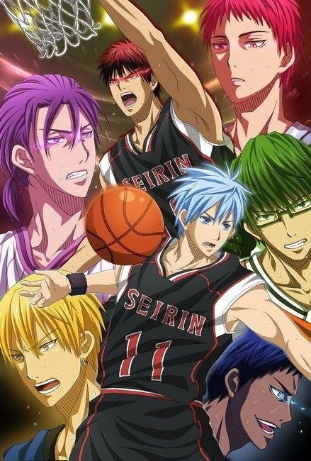

“Then what is “victory”? It doesn't matter how many points you score at the end of the game, if you're not happy, it's not a win.”© Kuroko Tetsuya

Kuroko's Basketball (Japanese: 黒子のバスケ, Hepburn: Kuroko no Basuke) is a Japanese sports manga series written and illustrated by Tadatoshi Fujimaki. It was serialized in Shueisha's shōnen manga magazine Weekly Shōnen Jump from December 2008 to September 2014, with its chapters collected in 30 tankōbon volumes. It tells the story of a high school basketball team trying to make it to the national tournament.